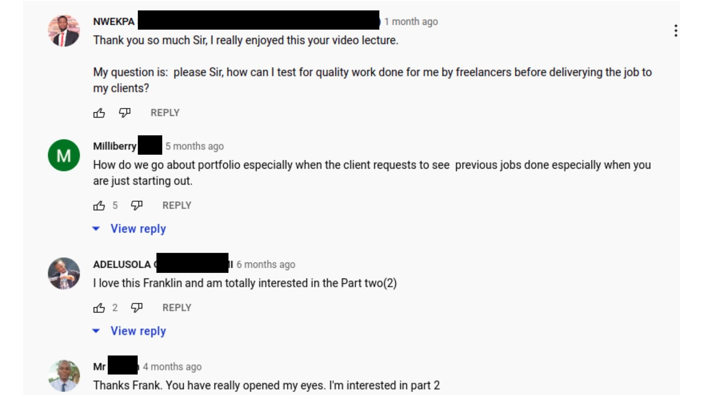

.png)
As an Affiliate or Entrepreneur,
What's worse than wasting your time and energy chasing a prospect that cannot buy a N25k digital product?
It's probably when they ghost you, post you or call you a scam!
Some even go as far as wishing to bite off your head.
It's so sad you are trying to make somebody’s life better, and they turn to call you names.
Unfortunately, as long as you keep doing your best, a few nut heads will always come out to crush your spirit.
I know this is not new to you anymore.
You've seen it too many times and are used to it by now.
But, what if there’s a more rewarding and satisfying way of deploying your expertise to make more money compared to what made a nut head call you a scam?
What if you could deploy your skills to go after the big bucks?
What if Drop Servicing is your next big game?
Just to be clear, Drop Servicing is Different from Drop Shipping.
I know you must have heard of Drop Shipping, but they are two different business models.
Drop Servicing involves selling Digital Services to Businesses and Entrepreneurs who have money and pressing needs.
And then you get someone else to deliver a quality job at a lower price.
You act as a middle man to arbitrage the transaction.

You make profit by making everything possible.
This business model I'm revealing to you is not new, it has been there for ages.
It’s what Digital Agencies do:
They charge huge amounts to deliver a digital service such as Web or Graphics design and outsource the labour for less.
The profit margin is always madd.
So if that’s the case, why is Drop Servicing coming out now?
Here's the reason why you may be hearing about it now:
All the articles and Youtube tutorials you will find out there only leave you with an explainer video.
An explainer that talks about how profitable Drop Servicing is as a business.
Which is actually true.
Yet, those videos have left thousands of interested viewers with many questions:
I was also among those thousands with unanswered questions, and I needed to get some answers real quick.
There was no complete manual to follow to successfully deploy the business.
So, I started searching for answers.
And after combing every damn resource out there,
Here's my number #1 discovery:
I discovered that setting up a successful drop servicing business was too technical for the average Joe.
And that it costs some money to get it running.
Apart from that:
- You need to understand the most profitable and in-demand services
- You need to know how to create an enticing offer that clients cannot resist
- You need to know how to position yourself as a professional to deliver your service to your niche
I was blown away by what I discovered.
The tutorials I saw on YouTube barely scratched the surface.
I became a total believer in Drop Servicing.
I had to document every single thing I learned and push it into the world.
And I desired to remove the barrier to entry so that anyone can kickstart their Drop Servicing business without stress.
So, combining my in-depth research with my training as a professional Software Developer.
I decided to map out a blueprint that anybody can copy and paste to kick start their Drop Servicing business.
I made sure the setup was dead simple and costs you $0 to get started from A-Z.
You will get:
- Free hosting
- Free domain name
- Free Business Email
- Free e-commerce store
- Free landing page templates
And lots more…
I also provided scripts and templates you can easily customize to help you stand out.
I don't want to brag
But, Drop Servicing for Affiliates & Entreprenuers (DROP SAFE) is one of the most complete and comprehensive guides out there.
Here’s a sneak peek of what you will learn.
First, let's do a cost analysis of these skills if you're getting them elsewhere:
- The Cost of learning how to build a website from scratch is 150k+
- The Cost of Business Consultation 350k+
- The Cost of learning Drop Servicing from the godfather of Drop Servicing is 650k
Oh, yes, in everything, there is an OG
Let's not divert our attention here.
That's over 1M+
If you aim to learn from the best of the best, that's really how much it's going to cost you.
Trust me, it’s going to take you all the time it takes to learn how to build a simple landing page, write your business plan, and finally learn what drop servicing is all about before you can get started
Did I mention the amount of time and money you will spend to set up your business?
Let me not bore you with the long list of things you need to do to get started on your own.
I just want to let you know that I have invested so much time and energy to make everything pretty simple for you to get started without stress.
You will learn everything above for FREE.
Just copy and paste my templates and tailor them to your niche.
What’s my motivation?
Money, money, money.
If I start blowing grammar just know that I'm lying.
I like being straightforward with people.
But here is what mean:
- Money for You
- Money for Me
- Money for All
And then here comes the big question:
Does Drop Servicing pay?
Here is my honest and simple answer:
Learning everything about Drop Servicing THE HARD WAY and deciding to break it down in DROP SAFE is my only testimonial.
And to answer the question of whether Drop Servicing pays,
Here are some testimonials I dug out from other Drop Servicers:
Please, this is not a get-rich-quick scheme.
This is a serious business with massive potential.
DROP SAFE has lifted many of the roadblocks for you to get started.
DROP SAFE was the missing manual I was looking for when I started my journey.
And if you're serious about kick-starting your Drop Servicing Business in 2022.
Then take your time to go through everything I have laid down in DROP SAFE.
DROP SAFE is the most complete and comprehensive guide out there at a giveaway price.
Get started now at 50k 25k.
This price will Double in:
FAQ
Is Drop Servicing Legal/Ethical?
Drop servicing is an entirely legal business model. If you take both your clients and your service providers seriously, you shouldn’t have any problems regarding law requirements and legal issues. You should always be aware of what is happening, why you’re doing it that way, and who you are working with. In this case, if you are knowledgeable about every step of the journey, you will not have to question the legality of what you are doing.
Is Drop Servicing Profitable
Drop servicing can be a very profitable business model these days. Low-entry requirements and the possibility to start with zero budget make it accessible and promising. Your client pays you upfront, and you decide how much of that sum you want to allocate to your service provider. Depending on the particular niche, type of work, and deadline, you make a profit in any case. While drop servicing definitely cannot be called a “money-making factory,” when done right, it will bring you the desired results.
Where do I find Services Providers
Generally, service providers are abundant in various freelance aggregators. The most popular ones include:
- Fiverr Upwork
- Freelancer.com
- People per Hour
- HubStaff Talent
- And many more!
What Services Can I Start Serving?
- Social media management
- Virtual assistant services
- Video creation
- Guest posting
- Ad copywriting
- Video editing
- Content creation
- Graphic design
- User testing
- Search engine optimization
- Link building
- Voiceover
- Résumé writing
- Lead generation or nurturing
What skills do I need to start Drop Servicing?
To get started, all you need is basic marketing and sales skills. Otherwise, it would be complicated to promote your business, find the first clients, and communicate with your potential service providers. Beyond that, a general rule of thumb is to possess at least the basic knowledge of the services you’re planning to offer. For instance, if you drop service SEO optimization, you should be at least a bit knowledgeable on the topic. Otherwise, you won’t know if your freelancers have completed quality work for your clients, and you risk getting a negative review and losing your reputation. It’s crucial to critically assess if the work is good or not and give the right directions to freelancers.